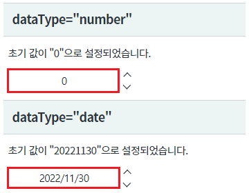
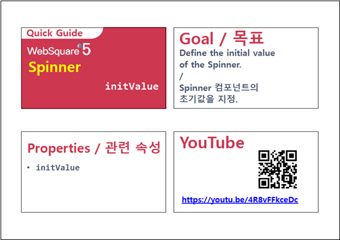

컴포넌트의 속성 initValue 설정 예제입니다. 속성 initValue는 컴포넌트의 초기값을 지정하는 예제입니다. 조건에 따라 초기 값이 변경되지 않는 경우 속성으로 고정값을 지정하여 사용할 수 있습니다.
숫자형 초기값 지정하기
날짜형 초기값 지정하기
컴포넌트의 초기 설정값을 확인합니다.
[브라우저(Chrome) 실행 예시]

STEP1. 속성을 지정합니다.
[필수] initValue="초기값" //초값을 지정합니다.
ex) initValue="0"
[소스 코드 예시]
<!-- spinner의 소스 본문 예시 --> <w2:spinner initValue="0" id="spi_exam1"> </w2:spinner>
initValue
[웹스퀘어5 SP5 개발 가이드] Spinner
링크 : https://docs1.inswave.com/sp5_user_guide/8df43d1f59fab704#42ddf8532ad343b6
[웹스퀘어5 SP5 개발 가이드] Spinner 초기값 지정
링크 : https://docs1.inswave.com/sp5_user_guide/8df43d1f59fab704#b90d1ecf3b435081
Spinner 초기값 지정
링크 : https://youtu.be/4R8vFFkceDc
